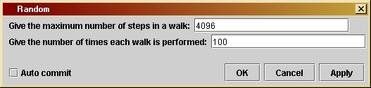

Randomversion 1.0
© 2003 Bernard Schutz
|
Randomversion 1.0
© 2003 Bernard Schutz
|
The result of this program is used in the discussion of the way photons randomly walk outwards from the center of the Sun. But the mathematics of ransom walks apply to many other situations. The basic result, that adding together a lot of random values produces an expected result that increases as the squre toot of the number of items, is widely applicatble.
The
parameter
window of Random (shown here) allows
the
user to choose just two parameters. One is the maximum number of steps
in a random walk. The graph will give the mean distance gone in a
number
of steps for walks up to and including this number. The second is the
number
of times each walk is performed, in order to get the average length.
There
is a trade-off here: the larger the user sets this number, the more
accurate
will be the average result obtained, but the longer will be the
computer
run-time.
The main work is done by the innermost loop. Here we make use of the
Java function Math.Random() to
generate the
random numbers. Every time it is called it returns a value that is
randomly
distributed in a random way between 0 and 1. (Of course, no computer
can
do perfectly random things, but the way these numbers are generated
makes
them random enough for our purposes. They are technically called
pseudo-random
numbers.) The idea is to allow the computer to generate a "step" (a
displacement
vector) from the current location to the next one that is random in all
three coordinates. Each coordinate component of the step should be
randomly
chosen in a uniform way between -1 and +1, so that the step can go
backwards
or forwards. To get this we do not need a different random number
generator:
the expression 2 * Math.random() - 1
produces
a number with the desired distribution. (If this is not obvious to you,
consider that 2 * Math.random() is
randomly
distributed between 0 and 2, and then if we subtract 1 from it the
range
of the distribution goes from -1 to +1.). The code for the loop that
generates
the random walk is
for ( m = 0; m < nSteps; m++) {
dx = 2 * Math.random() - 1;
dy = 2 * Math.random() - 1;
dz = 2 * Math.random() - 1;
stepSize += Math.sqrt(dx*dx + dy*dy + dz*dz);
x += dx;
y += dy;
z += dz;
}
This uses a loop index m, which runs from 0 to nSteps-1.
Now, the value of nSteps is set in the
outermost
loop, which we will describe below. But for now, it is just the total
number
of steps in the random walk. Each step has components dx, dy, and dz.
Although
the code for each of these is the same, remember that each time
Math.random()
is invoked, it produces a different (randomly different) number. Then
we
do two things with these components. The first is to compute the total
length of the step and add it to the variable stepSize,
which keeps track of the total distance that the walk achieves. The
second
is that we add the individual step components to the variables x,
y,
and z, respectively, which are the
components
of the net displacement vector for all the steps so far. All the
variables
stepSize,
x,
y,
and z are initialized to zero before
the
loop begins.
This loop is nested in another loop that executes this walk over and
over again and averages the results. It begins with
for ( k = 0; k < nTrials; k++) {
x = 0.;
y = 0.;
z = 0.;
stepSize = 0;
in which we see that there will be nTrials
iterations, so that the walk described by the innermost loop will be
repeated
nTrials
times. The value of nTrials was set by
the
user in the parameter window. The remaining lines here simply
initialize
variables to zero, as described above. This code is immediately
followed
by the innermost loop above, and after that there are the lines
avgDist[j] += Math.sqrt(x*x + y*y + z*z)/(stepSize/nSteps);
}
which finish the loop (at the closing "}").
The important line here is the computation of the average of the net
distance
of the walks. The expression on the right-hand-side of this assignment
statement is the total net distance travelled (the length of the net
displacement
vector whose components are x, y,
and z) divided by the average size of
an
individual step (which is the value of stepSize/nSteps
because stepSize has accumulated the
total
distance travelled in all the steps and therefore dividing it by nSteps
produces the average size of the steps in this walk). This is our
measure of the length of the walk: the net distance travelled for a
given
stepsize. This value is then added to a variable called avgDist[j],
which is an array element that will eventually hold the average of the
lengths of all the walks containing nSteps
steps. For now, it accumulates the total length; it will be divided by
the number of trials nTrials later to
get
the average.
The outermost loop controls the number of steps in each experiment.
Since we want to investigate how the net distance travelled depends on
the number of steps, we need to have many experiments with different
numbers
of steps. The loop to control this begins with the code
for (j
= nWalks-1; j >= 0; j-- ) {
lengths[j] = nSteps;
We can see that there will be nWalks
experiments; the value of this variable is set before the loops begin,
using the value maxSteps that the user
specifies
in the parameter window. (Exactly how this is done is described below.)
The unusual thing about this loop is that it runs "backwards": the
counter
j
starts with its maximum value and runs down to zero. The reason for
this
will become clear below. Also before this loop begins the program has
already
defined the two arrays lengths[] and avgDist[]
to have nWalks elements each. The
first line
of this loop then sets the current (j'th)
element of the array lengths to nSteps.
This will be the independent variable of our output: the number of
steps
in the random walks of the current experiment.
These lines are immediately followed by the two nested loops
described
above, and they are then followed by
avgDist[j] /= nTrials;
nSteps /= 2;
if ( nSteps <= 1 ) break;
}
which closes this outer loop. The first line does the division the
converts the value of avgDist[j] into
a true
average. This will be the dependent variable in the output from this
unit:
the average net distance travelled in a random walk with nSteps
steps. The second line then reduces the number of steps by a factor of
two so that the next iteration of the outer loop tests random walks
with
just half as many steps as the current one. This reduction in the
number
of steps is the reason that the counter j
runs backwards. That ensures that small j
corresponds to small numbers of steps and large j
to large numbers of steps. The final line is a safety measure, to
ensure
that if we reach trials with just one step, or even fewer than 1, we
don't
attempt to execute the experiment!
To complete our understanding of the program we must show how the
total
number of walks nWalks. The user
fixes
the maximum number of steps in a random walk in the parameter window,
and
this is stored by the program in the variable maxSteps.
We want to perform walks with this number of steps (at least
approximately)
and then keep dividing the number of steps in half to get other
experiments.
The number of times we can divide this number in half and still get a
value
greater than 1 is given by the logarithm of this number to the base 2.
If the logarithm is not an integer (and it is usually not an integer)
then
we round it down to the nearest integer to get the number of times we
can
divide the number by 2 for our experiments. Now, Java does not have a
base-2
logarithm function, but one can compute the base-2 log from Java's
natural
logarithm function Math.log() by
dividing
by the natural logarithm of 2. This leads to the follwing line in the
program
before the loops begin:
int
nWalks
= (int)Math.floor( Math.log(maxSteps)/Math.log(2.) );
In it we construct the logarithm to the base 2 of maxSteps
and then round it down with the Java function Math.floor,
which produces the "floor" of its argument, which is the largest
integer
smaller than its argument. But this Java function returns its value as
a double, not an integer, so we place "(int)"
in front of it to convert it into an integer value, and then we assign
it to nWalks. (The code "(int)"
is called a cast. It performs a conversion from one type of
data
to another.)
This describes the basic idea of this random-number code.
If you want to change the program you will have to re-compile it, as explained by the help file Using Triana for Gravity from the ground up.
/*
maxSteps is the maximum number of
steps in any of the random walks.
The program will perform walks of
this length and shorter ones to
find the trend in the distance as
a function of the number of steps.
This is set by the user in the user
interface window.
*/
private int maxSteps;
/*
Variables
that we need each time the code is executed.
- nWalks
is the number of lengths of random walks that we will
experiment with. The largest length is given by maxSteps.
Smaller walks are obtained by dividing the number of steps
of the previous walk by 2, rounding down to an integer
if necessary. Thus, if maxSteps is 9 then there will be a
walk of 4 steps and one of 2 as well. (We do not perform
walks of length 1!). To find nWalks we take the logarithm
of maxSteps to the base 2 and round it down to the nearest
integer. The compuation below uses Java's logarithm method,
which computes the natural logarithm. To get the logarithm
to the base 2, we divide by the natural logarithm of 2.
- arrays
avgDist and lengths hold the data that will be
output. For each length of walk, array lengths holds the
length (number of steps), and array avgDist holds the
average distance achieved by all nTrials walks of that number
of steps.
- j and
k are integers needed for loops.
- nSteps
will be used to keep track of the number of steps
in the current type of walk.
- x, y,
and z will accumulate the distances moved in the three
directions.
- dx, dy,
and dz will hold the distances moved in a single step.
- stepSize
will be used to find the average step size.
*/
int nWalks =
(int)Math.floor(
Math.log(maxSteps)/Math.log(2.) );
double[] avgDist = new
double[nWalks];
double[] lengths = new
double[nWalks];
int j, k, m;
int nSteps = maxSteps;
double x, y, z, dx,
dy, dz;
double stepSize;
/*
Now start
the main loop over the types of walks. Each type
has a fixed
number of steps. Within this loop we will perform
each type
of walk nTrials times and take the average of the
resulting
distances. This loop runs backwards, because we
start with
the maximum number of steps and keep reducing it
unitl we
get to walks with just 2 or 3 steps.
*/
for (j = nWalks-1; j
>= 0; j-- ) {
lengths[j] = nSteps;
/*
Here we begin the independent trials for this number of
steps. Each trial begins at the origin. Use stepSize to
accumulate the total of the step-lengths and later
divide it by nSteps to get an average step-length.
*/
for ( k = 0; k < nTrials; k++) {
x = 0.;
y = 0.;
z = 0.;
stepSize = 0;
/*
We perform the random walk here. We generate step-lengths
in each direction using the Java random-number generator,
Math.random(), which returns a pseudo-random number
uniformly distributed between 0 and 1. We multiply it by 2
and subtract 1 to get a number uniformly distributed
between -1 and 1.
*/
for ( m = 0; m < nSteps; m++) {
dx = 2 * Math.random() - 1;
dy = 2 * Math.random() - 1;
dz = 2 * Math.random() - 1;
stepSize += Math.sqrt(dx*dx + dy*dy + dz*dz);
x += dx;
y += dy;
z += dz;
}
/*
Compute the scaled distance achieved by the walk by taking
the total distance from the origin and dividing by the
average step-length, which is stepSize/nSteps. Use the
array avgDist[j] to accumulate the sum of these scaled
distances.
*/
avgDist[j] += Math.sqrt(x*x + y*y + z*z)/(stepSize/nSteps);
}
/*
Divide the accumulated total distance by the number of trials
to get the average distance in units of the step-length
*/
avgDist[j] /= nTrials;
nSteps /= 2; // integer division leaves no remainder
if ( nSteps <= 1 ) break;
}
Curve out = new
Curve(
lengths, avgDist);
out.setTitle("Random
walk");
out.setIndependentLabels(0,"number
of steps");
out.setDependentLabels(0,"average
net distance");
output( out );
}